Øvelsesbank
Styrkeøvelser sortert i sju bevegelsesgrupper, pluss hopp for skjelettet. Dekker du de sju gruppene i løpet av uka, har du trent hele kroppen.
Styrkeøvelser sortert i sju bevegelsesgrupper, pluss hopp for skjelettet. Dekker du de sju gruppene i løpet av uka, har du trent hele kroppen.
Trykk på en gruppe for å se øvelsene, og på et bilde for å se det større.
Forside lår og sete
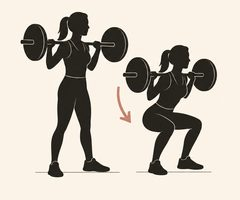
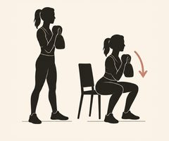
Knebøy med stangStanga på øvre del av ryggen. Sett deg ned og litt bakover, knærne følger tærne.Knebøy med manual eller kettlebellHold vekten foran brystet (goblet-knebøy), gjerne ned mot en stol.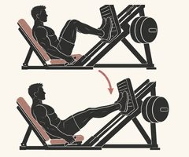
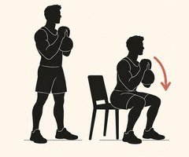
BeinpressSenk kontrollert til knærne er rundt 90 grader, og press opp uten å låse knærne.Knebøy til stol på ett beinSett deg rolig ned på stolen og reis deg på ett bein. Start på to bein med en kettlebell, som på bildet.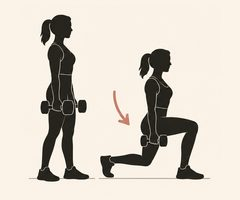
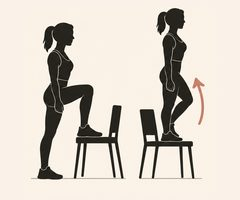
Utfall med manualerTa et steg fram eller bak, og senk bakre kne rolig mot gulvet.Step-up eller utfall bakoverPå et trappetrinn eller en stødig stol, gjerne med manualer.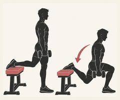
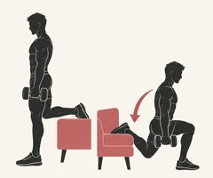
Bulgarsk utfallBakre fot på en benk, senk deg rett ned. Krevende, og gir mye effekt med lette vekter.Bulgarsk utfallBakre fot på en stol eller sofa, senk deg rett ned. Krevende, og gir mye effekt med lette vekter.Bakside lår og sete
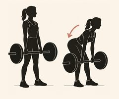
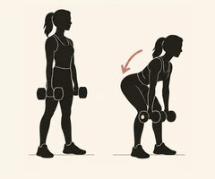
Rumensk markløft med stangSkyv hoftene bakover med nesten strake bein og rett rygg. Hold stanga tett inntil beina.Rumensk markløft med manualerFor mer: markløft på ett bein.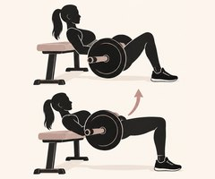
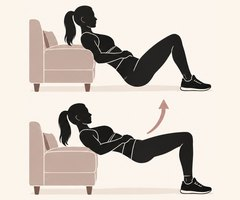
Hip thrustRyggen mot en benk og stang over hoftene. Klem setet på toppen.SeteløftPå gulvet eller med skuldrene mot sofaen, gjerne med en manual på hoftene.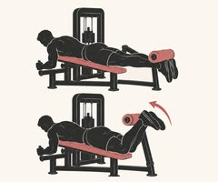
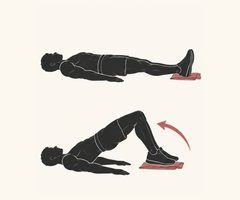
Leg curl i apparatBøy knærne kontrollert, og senk sakte.Leg curl på håndkleLigg på ryggen med hælene på et håndkle på glatt gulv. Løft hoftene og dra hælene inn mot setet.Bryst, forside skuldre og bakside armer
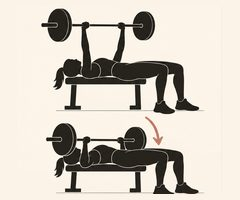
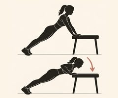
Benkpress eller brystpress med manualerSenk kontrollert mot brystet, med albuene litt inn mot kroppen.Push-upsMot kjøkkenbenken, på knærne eller på gulvet. Eller brystpress med manualer liggende på gulvet.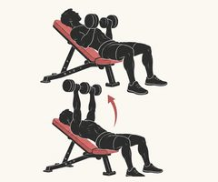
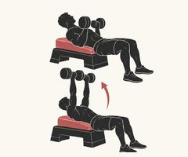
Skrå brystpress med manualerBenken på 30–45 grader.Skrå brystpress med manualerMed ryggen mot en step-kasse eller noen puter, så overkroppen ligger på skrå.Skuldre
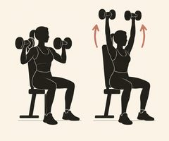
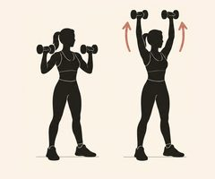
Skulderpress med manualerSittende eller stående. Hold magen lett aktiv og unngå å svaie i korsryggen.Skulderpress med manualer eller strikkStående eller sittende.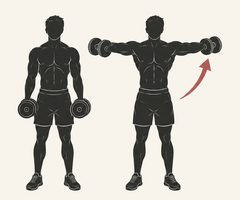
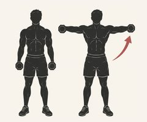
SidehevMed lette manualer eller i kabel. Løft armene ut til siden til skulderhøyde.SidehevMed lette manualer eller strikk. Løft armene ut til siden til skulderhøyde.Øvre del av ryggen
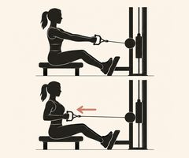
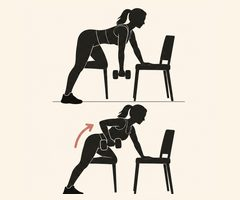
Sittende roing i kabelTrekk albuene bakover og skulderbladene mot hverandre.Roing med manualÉn arm av gangen med støtte på en stol.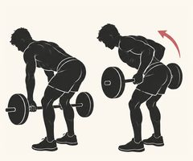
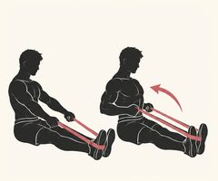
Foroverbøyd roing med stangBøy i hoftene med rett rygg, og trekk stanga mot navlen.Roing med strikkSitt på gulvet med strikket rundt føttene, eller fest det i døra.Rygg og forside armer
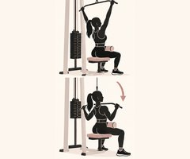
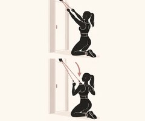
NedtrekkTrekk stanga ned mot øvre del av brystet.Nedtrekk med strikkStrikket festet øverst i døra.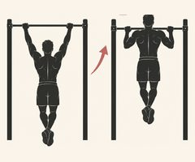
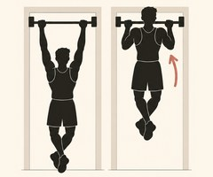
Pull-upsMed strikk eller i apparat for hjelp hvis det er for tungt.Pull-ups i dørstangStart med å henge, eller senk deg sakte ned fra toppen.Mage, rygg og grep
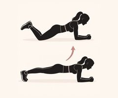
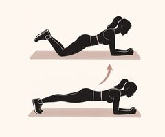
PlankePå knærne eller med strake bein. Rett linje fra hode til knær eller hæler.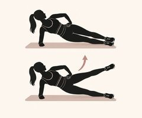
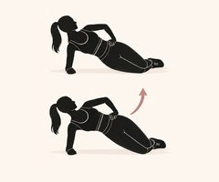
SideplankeStart på knærne. For mer: strake bein.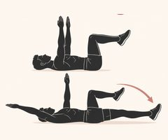
Dead bugLigg på ryggen og senk motsatt arm og bein rolig. Korsryggen skal ligge mot gulvet.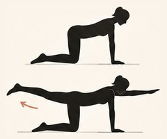
Bird dogPå alle fire: strekk ut motsatt arm og bein, og hold hoften stabil.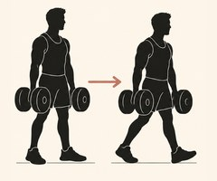
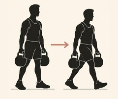
Farmer’s walkGå rolig med en tung manual eller kettlebell i hver hånd, med rak rygg.Farmer’s walkMed kettlebells, manualer eller tunge handleposer.Valgfritt. Korte, raske støt styrker skjelettet, noe Stacy Sims anbefaler særlig rundt og etter overgangsalderen.
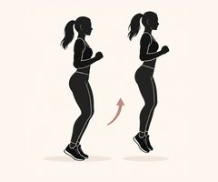
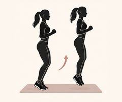
Små hopp på stedetHopp lett opp og ned på tærne, med myke knær i landingen. Start med 10–20 hopp.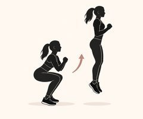
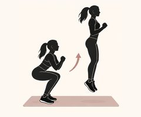
KnebøyhoppGå ned i en kort knebøy og hopp rett opp. Land mykt og kontrollert.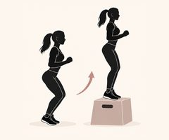
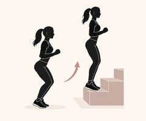
Hopp opp på kasseVelg en lav kasse, hopp opp med begge bein, og gå rolig ned igjen.Hopp opp på trappetrinnHopp opp på nederste trinn med begge bein, og gå rolig ned igjen.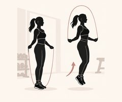
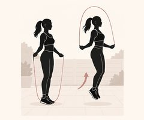
SjippingKorte runder på 20–30 sekunder.SjippingKorte runder på 20–30 sekunder, gjerne ute eller på et mykt underlag.Start med noen få hopp 2–3 ganger i uka, gjerne etter oppvarmingen. Kjenner du lekkasje eller tyngdefølelse i bekkenet, ta det roligere, styrk bekkenbunnen først, og snakk gjerne med en fysioterapeut. Har du benskjørhet eller vonde knær, avklar hopping med lege eller fysioterapeut.
Hvor ofte du bør trene, og et ferdig opplegg hvis du er ny eller vil ha et utgangspunkt.